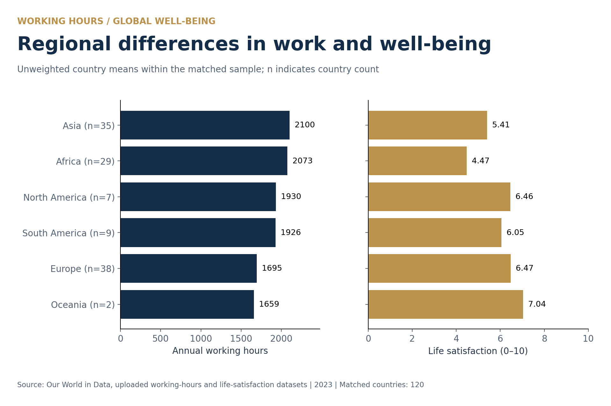
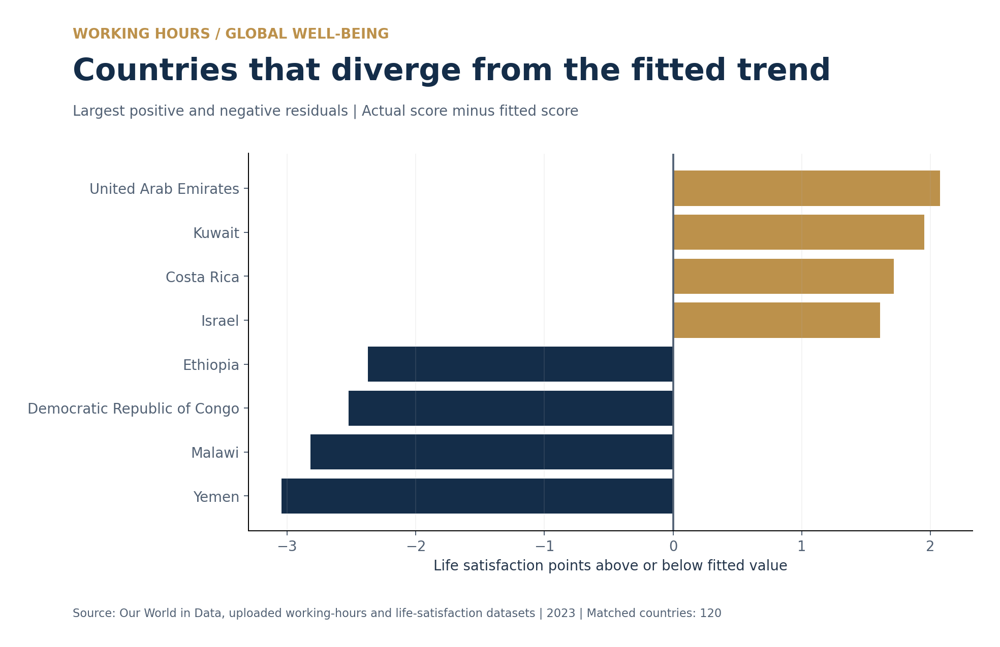

Working Hours & Global Well-being
How are annual working hours associated with life satisfaction across countries?
Key finding
Longer average working hours are associated with lower life satisfaction in the matched sample. This does not establish causation.

Regional patterns

Regional averages give each available country equal weight.
Country-level deviations

Deviations from the fitted relationship suggest questions for further investigation.
Data and methodology
Matched country-level observations for 2023; compared annual hours worked per worker with life satisfaction on the 0–10 Cantril ladder; calculated Pearson correlation, regional summaries and deviations from a fitted linear relationship.
Download matched dataset (CSV)
Sources: Our World in Data — Life satisfaction · Annual working hours.
Limitations
National averages cannot establish individual effects. Income, social support, employment composition and measurement differences may confound the association.